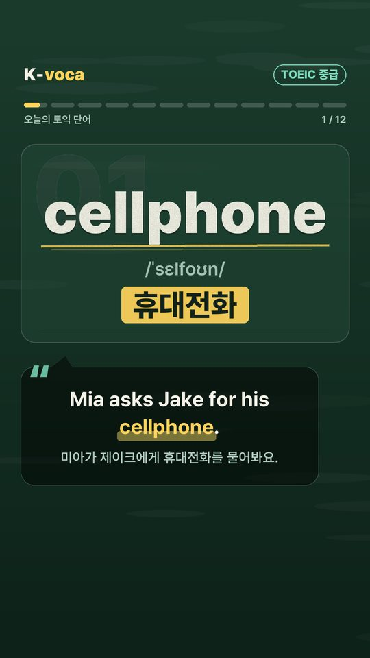
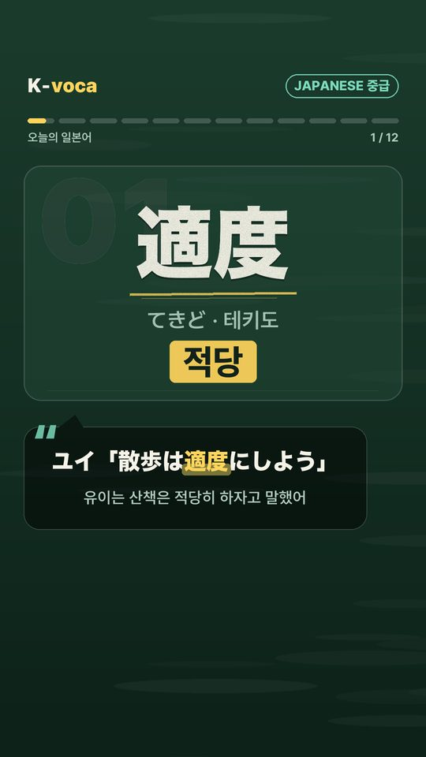
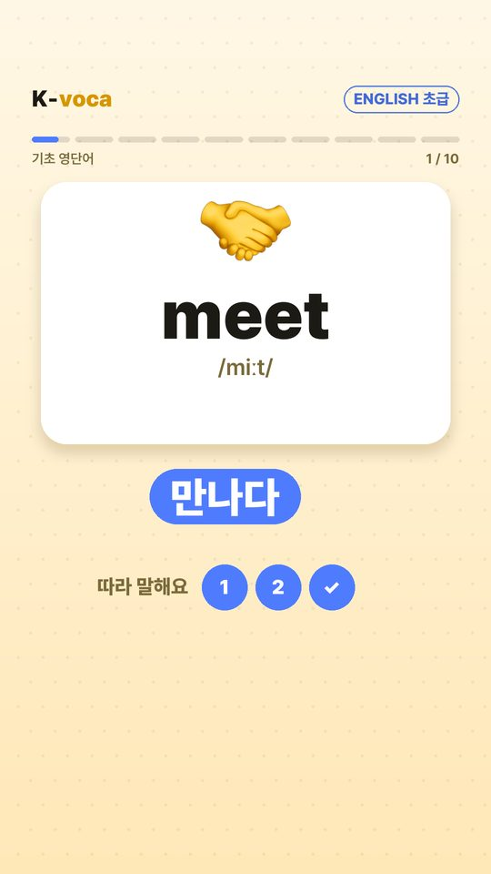
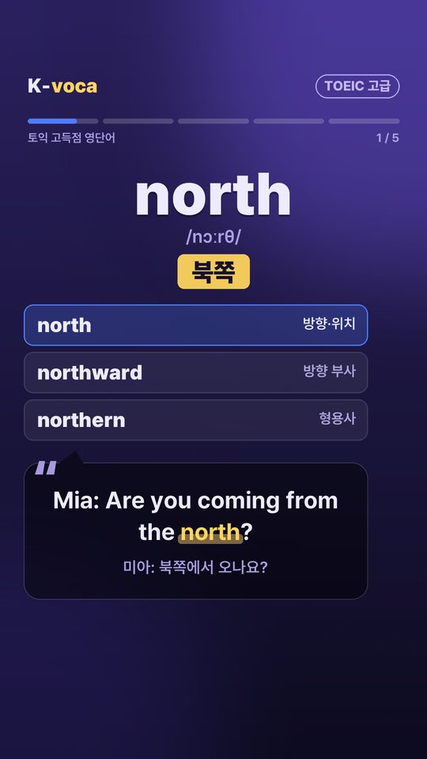
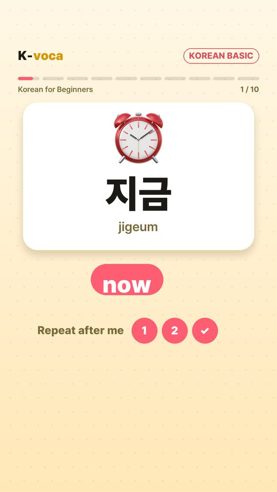

New words in one minute a day, with native audio
K-voca publishes short vocabulary videos for learners of English, Japanese, Chinese and Korean. Every video shows the word, its pronunciation and meaning, and a real example sentence — read aloud by a native-sounding voice.


Four languages, three levels
Each language has its own daily series. Words follow well-known learner lists, so you build vocabulary in a sensible order.
For Korean speakers
- Beginner — everyday core words (NGSL)
- Intermediate — TOEIC words
- Advanced — high-score TOEIC & nuance
JLPT path
- Beginner — N5 · N4
- Intermediate — N3
- Advanced — N2 · N1
HSK path
- Beginner — HSK 1 · 2
- Intermediate — HSK 3 · 4
- Advanced — HSK 5 · 6
For learners of Korean
- TOPIK beginner to advanced
- Meanings in English
- Vietnamese edition (EPS-TOPIK basics)
From this week's videos
A few real entries from K-voca videos published in late October 2026.
What a video looks like
Vertical one-minute videos, designed differently for each level.



How each video is made
K-voca is a small personal project. Its owner runs a desktop tool that prepares and publishes the videos to K-voca's own channels.
Pick words
Words come from open learner lists (NGSL, TOEIC lists, JLPT, HSK, TOPIK), in order, without repeats.
Check meaning
Meanings, readings and example sentences are written with AI help, then checked against dictionaries and rules.
Record & render
An AI text-to-speech voice reads every word and sentence; the video is drawn frame by frame.
Review & publish
The owner reviews each video, then publishes it to K-voca's YouTube, TikTok, Instagram and Threads.
Watch K-voca
New videos every day.
FAQ
Is K-voca free?
Yes. All videos are free to watch on K-voca's channels.
Are the voices real people?
No. K-voca uses AI text-to-speech voices that sound native. We say so honestly in every video description.
Can I use the K-voca desktop tool?
No. The tool is used only by K-voca's owner to publish K-voca's own videos to K-voca's own accounts. It does not offer sign-up or log-in for other users and does not access anyone else's accounts.
What data does K-voca collect?
K-voca does not collect data from viewers. When connected to a platform (for example TikTok or YouTube), the tool only uses the owner's own account to upload videos and read the owner's own video statistics. See the Privacy Policy.
I found a mistake in a video.
Thank you! Please leave a comment or email kvoca.daily@gmail.com.
K-voca 는
하루 1분, 원어민 발음(AI 음성)으로 단어 몇 개와 예문을 익히는 짧은 영상을 매일 올리는 개인 프로젝트입니다. 영어(토익) · 일본어(JLPT) · 중국어(HSK) · 외국인을 위한 한국어(TOPIK)를 초급 · 중급 · 고급으로 나눠 올립니다.
K-voca 데스크톱 도구는 운영자 본인만 쓰며, K-voca 의 영상을 K-voca 의 계정에 올리고 그 계정의 통계를 보는 데에만 쓰입니다. 다른 사람의 계정이나 정보에는 접근하지 않습니다. 문의: kvoca.daily@gmail.com